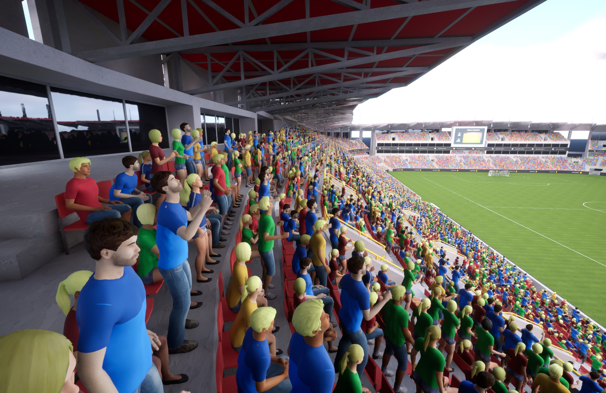

Workflow Overview
This page provides a comprehensive overview of the Vertex Animation Toolset workflow, helping you understand how the different components work together to create efficient animated characters.
The Complete Workflow

The Vertex Animation Toolset workflow consists of several key stages:
graph TD
A[1. Asset Creation] --> B[2. Asset Configuration]
B --> C[3. Implementation]
C --> D1[Single Character]
C --> D2[Multiple Characters/Crowds]
D2 --> E[4. Crowd Management]
D1 --> F[5. Animation Control]
E --> F1. Asset Creation
The first step is to convert your skeletal mesh animations into vertex animations:
- Right-click on your skeletal mesh in the content browser
- Choose either "Make Bone Animation" or "Make Vertex Animation"
- Select the animations you want to include
- Create and save your VA Asset Collection
For detailed instructions, see the Quick Start Guide.
2. Asset Configuration
Once your VA Asset Collection is created, you can configure it using the VA Asset Editor:
- Adjust animation build settings
- Configure mesh properties
- Set up custom data for instance variations
- Rebuild the asset after making changes
For more information, see VA Asset Collection and VA Asset Editor.
3. Implementation Options
The Vertex Animation Toolset offers two main implementation paths:
Single Character Implementation:
For individual characters that need precise control:
- Use the VA Mesh Component
- Configure animation lists and logic
- Control animations through the VA Animation Player
Multiple Characters/Crowds Implementation:
For efficiently rendering multiple characters:
- Use the VA Instanced Mesh Component
- Manage instances through code or the Crowd Tools
- Control batch animations through the VA Animation Player
4. Crowd Management
For scenes with multiple characters, the Crowd Tools provide intuitive ways to place and manage instances:
- Crowd Editor Mode for overall management
- Crowd Brushes for configuring instance properties
- Multiple placement methods:
- Paint Tool for free-form placement
- Grid Tool for structured placement
- Single Placement for precise individual placement
5. Animation Control
Control your vertex animations through:
- VA Animation Player for playback control
- VA Lists for organizing animations
- Animation Logic for defining animation behaviors
Decision Guide
When to use Bone vs. Vertex Animation
| Bone Animation | Vertex Animation |
|---|---|
| ✓ Enables animation sharing between meshes | ✓ More performant |
| ✓ Supports more animations and vertices | ✓ Lower material costs |
| ✗ Not as performant as Vertex Animation | ✗ Doesn't support animation sharing |
| Best for: Projects with many shared animations | Best for: Maximum performance in crowds |
When to use VA Mesh vs. VA Instanced Mesh Component
| VA Mesh Component | VA Instanced Mesh Component |
|---|---|
| ✓ Individual control over a single character | ✓ Efficient rendering of multiple characters |
| ✓ More detailed control options | ✓ Better performance for crowds |
| ✗ Not optimized for multiple instances | ✗ Less individual control over each instance |
| Best for: Hero characters, important NPCs | Best for: Background characters, crowds |
Next Steps
- Follow the Quick Start Guide to create your first VA Asset Collection
- Learn about VA Asset Collection to understand the core asset structure
- Explore the Crowd Tools to start placing characters in your scene